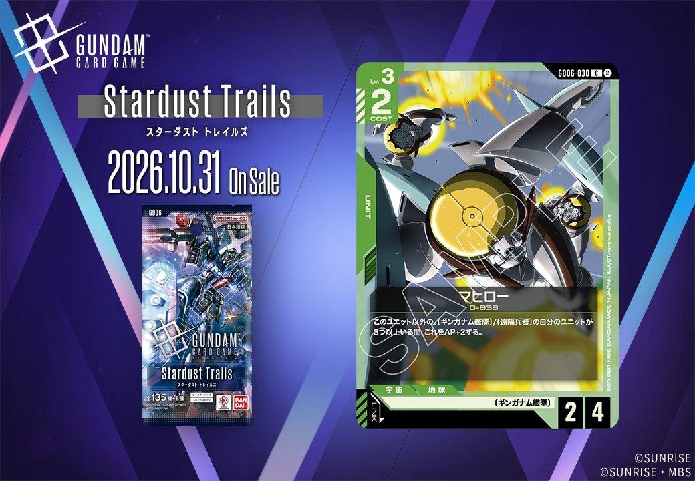
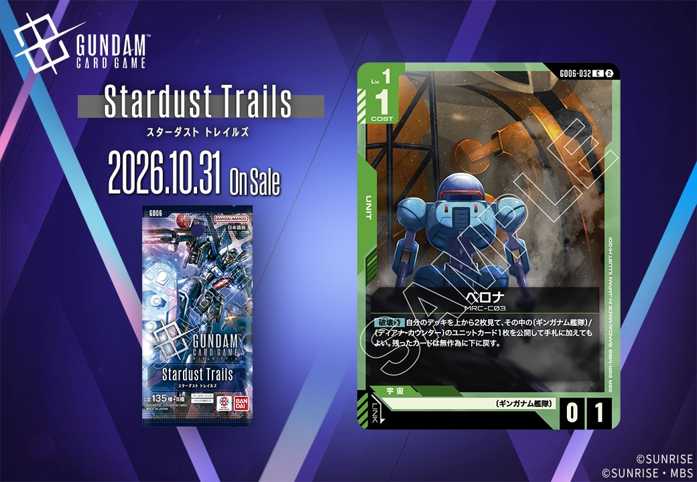
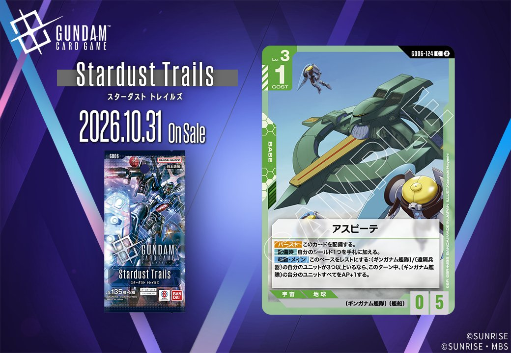
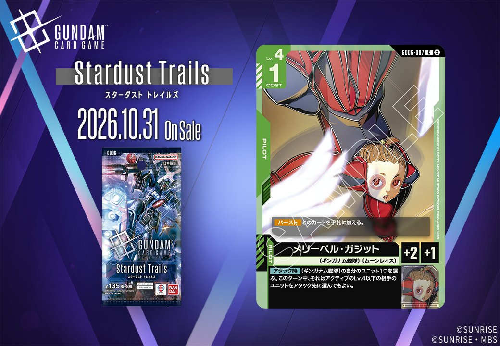
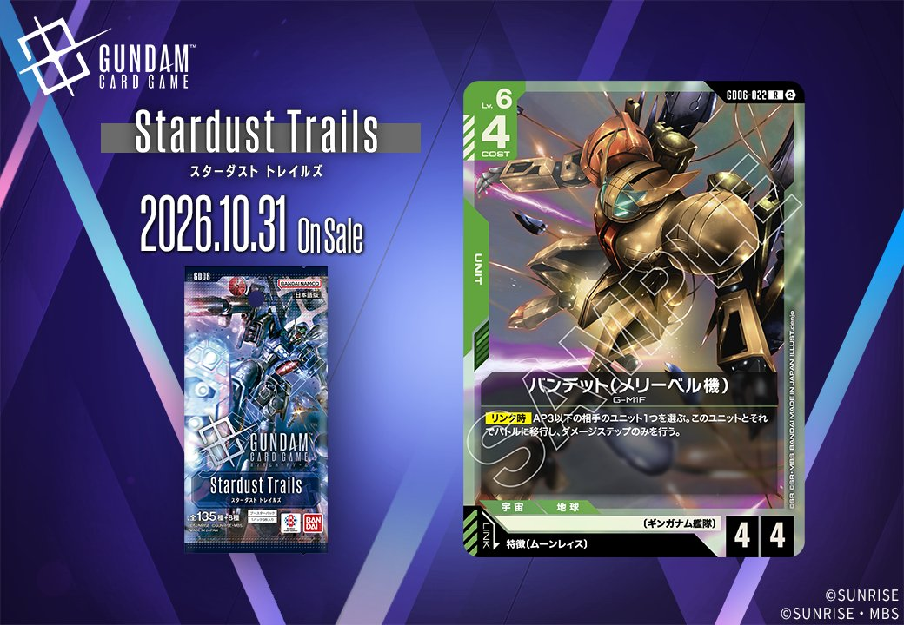
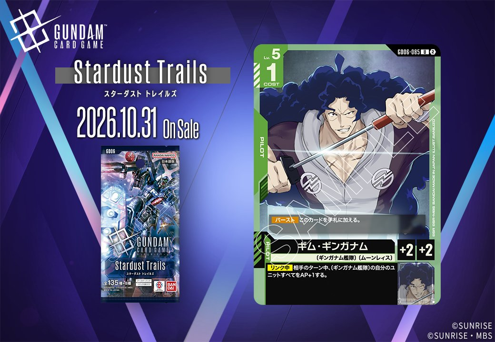
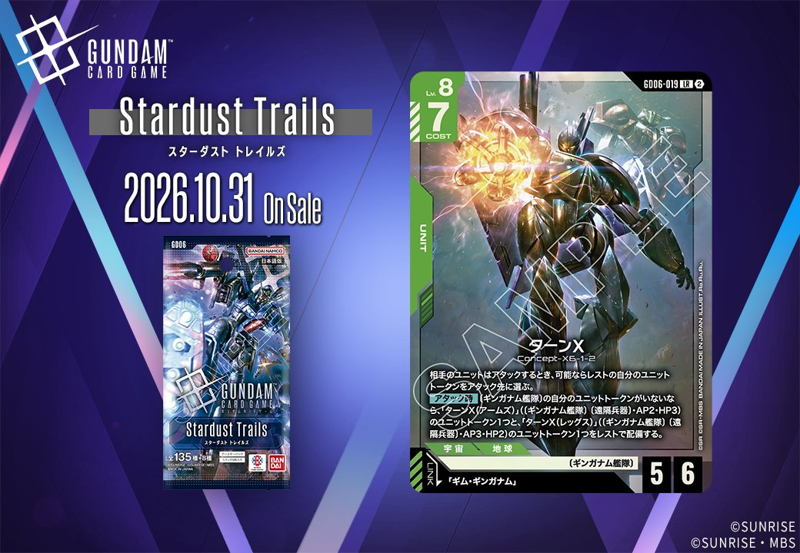

2026年10月31日発売のGD06から、新カード2枚を紹介します。取り上げるのはマヒロー（GD06-030）とベロナ（GD06-032）で、いずれも色は緑、タイプはUNITです。カード番号も近い同色のUNIT同士なので、ここではGD06の緑のカードとしてまとめて確認していきましょう。

マヒロー (GD06-030)
| 色 | 緑 | タイプ | UNIT |
| Lv | 3 | コスト | 2 |
| AP | 2 | HP | 4 |
| 特徴 | 〔ギンガナム艦隊〕 | ||
効果: このユニット以外の〔ギンガナム艦隊〕/〔遠隔兵器〕の自分のユニットが3つ以上いる間、これをAP+2する。
マヒロー(GD06-030)は、Lv.3・コスト2でAP2/HP4の緑のユニットです。リンクは設定されていません。自身以外の〔ギンガナム艦隊〕/〔遠隔兵器〕の自分のユニットが3つ以上いる間はAP+2され、AP4/HP4になります。条件を満たす手段として分かりやすいのはターンXです。【アタック時】に〔ギンガナム艦隊〕〔遠隔兵器〕のトークン2つをレストで配備するため、ターンX本体と合わせて3つに届きます。同じ3つ以上の条件を持つアスピーテを起動すれば、そのターン中はさらにAP+1が乗ります。条件を満たせない場面でも、コスト2でHP4の耐久があるため、序盤から場に置いておけるでしょう。

ベロナ (GD06-032)
| 色 | 緑 | タイプ | UNIT |
| Lv | 1 | コスト | 1 |
| AP | 0 | HP | 1 |
| 特徴 | 〔ギンガナム艦隊〕 | ||
効果: 【破壊時】自分のデッキを上から2枚見て、その中の〔ギンガナム艦隊〕/〔ディアナ・カウンター〕のユニットカード1枚を公開して手札に加えてもよい。残ったカードは無作為に下に戻す。
ベロナはLv.1・コスト1の緑のユニットで、特徴は〔ギンガナム艦隊〕です。HP1のため場持ちは望めませんが、【破壊時】にデッキの上2枚から〔ギンガナム艦隊〕か〔ディアナ・カウンター〕のユニットカード1枚を手札に加えられるので、倒されても次の展開につながります。対象はユニットカードに限られ、ターンXやバンデット(メリーベル機)は拾えますが、パイロットは手札に加えられません。場にいる間は、アスピーテの起動条件である〔ギンガナム艦隊〕/〔遠隔兵器〕のユニット3つ以上の頭数にも数えられるでしょう。見るのは2枚だけで空振りもあるため、デッキ内の対象ユニットの比率が価値を左右します。
関連カード
-

アスピーテ(GD06-124)NEW緑系 — 同色・共通特徴: ギンガナム艦隊（新カード） -

メリーベル・ガジット(GD06-087)NEW緑系 — 同色・共通特徴: ギンガナム艦隊（新カード） -

バンデット(メリーベル機)(GD06-022)NEW緑系 — 同色・共通特徴: ギンガナム艦隊（新カード） -

ギム・ギンガナム(GD06-085)NEW緑系 — 同色・共通特徴: ギンガナム艦隊（新カード） -

ターンX(GD06-019)NEW緑系 — 同色・共通特徴: ギンガナム艦隊（新カード）